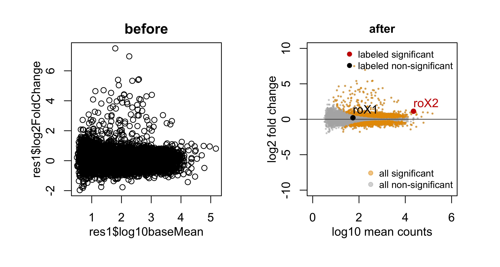
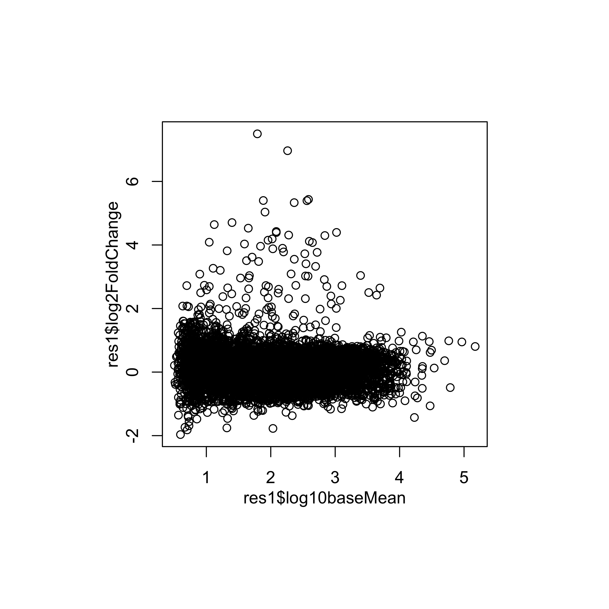
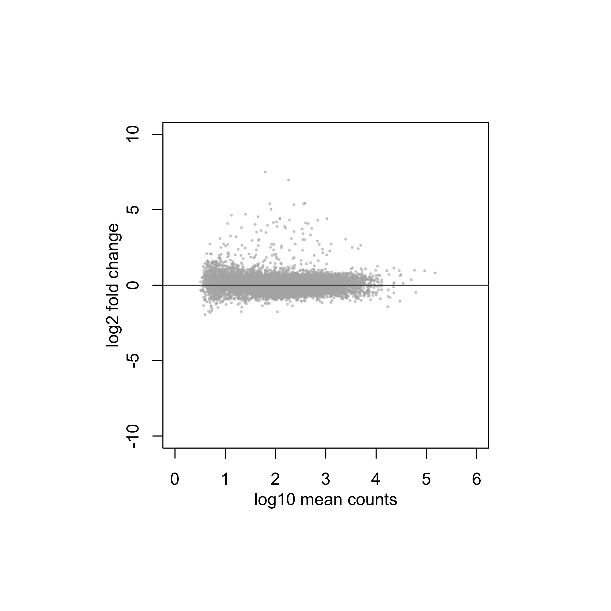
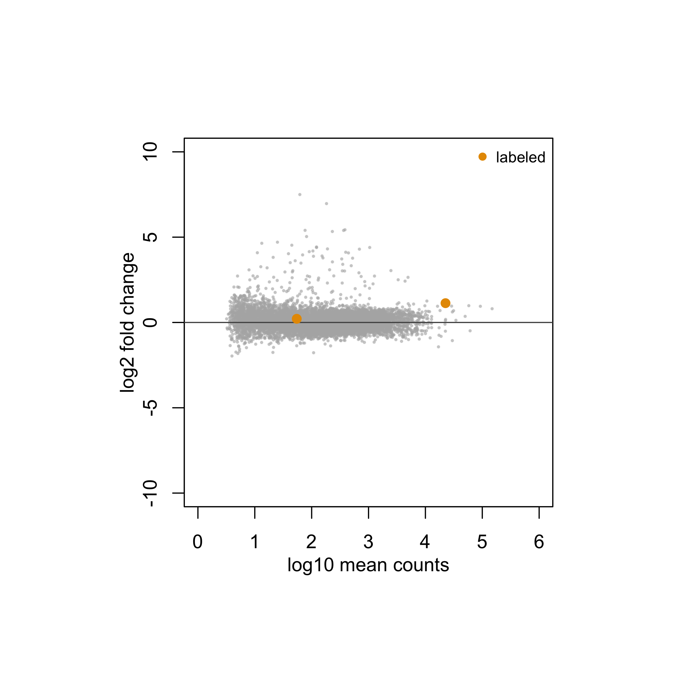
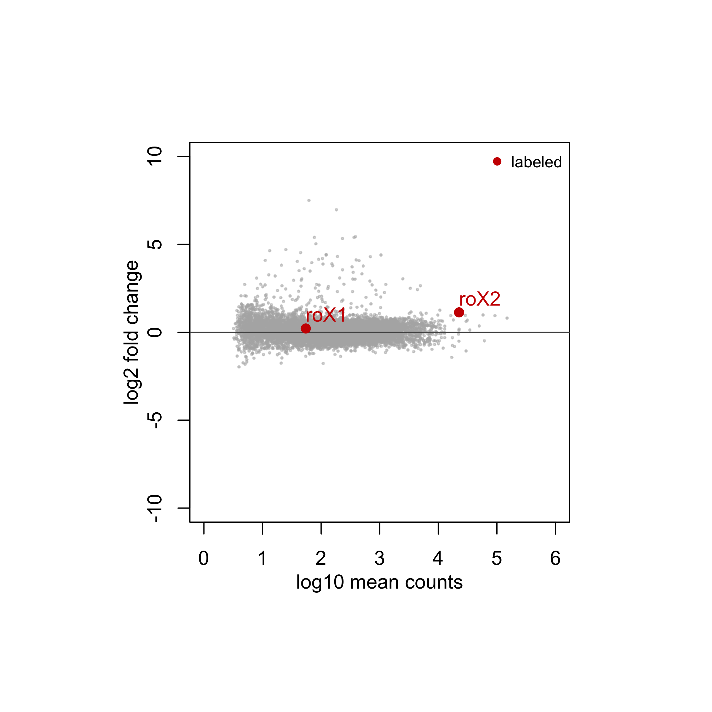
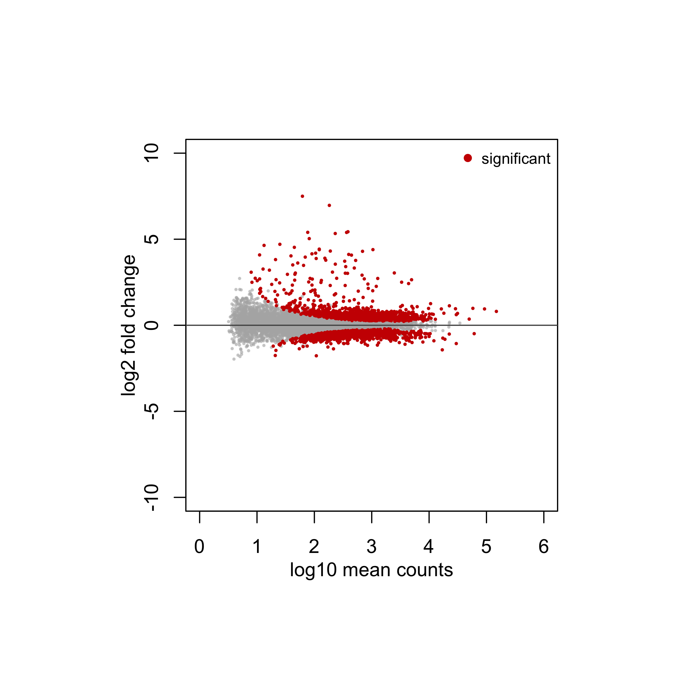
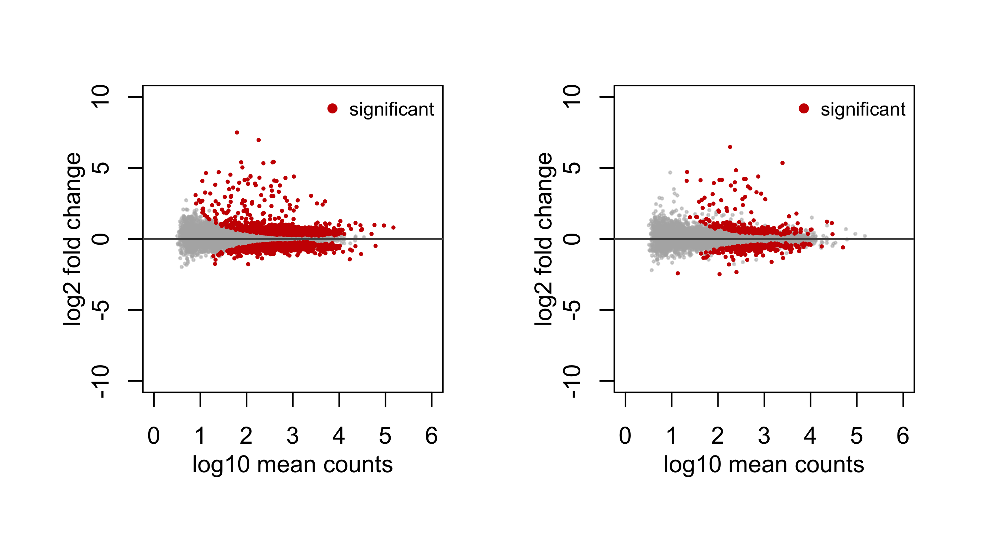
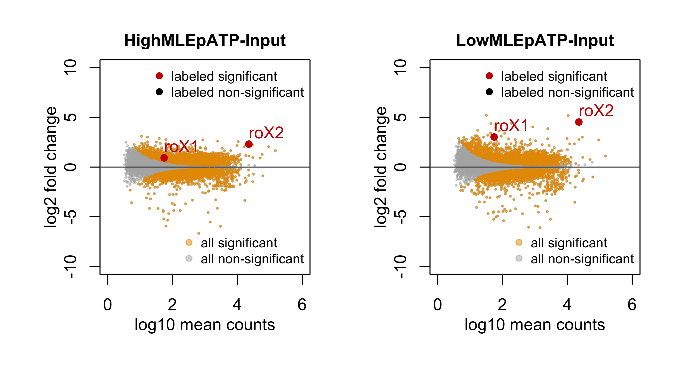
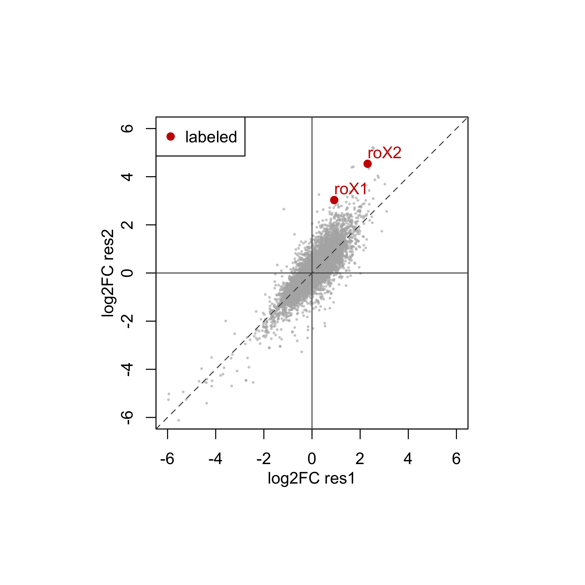
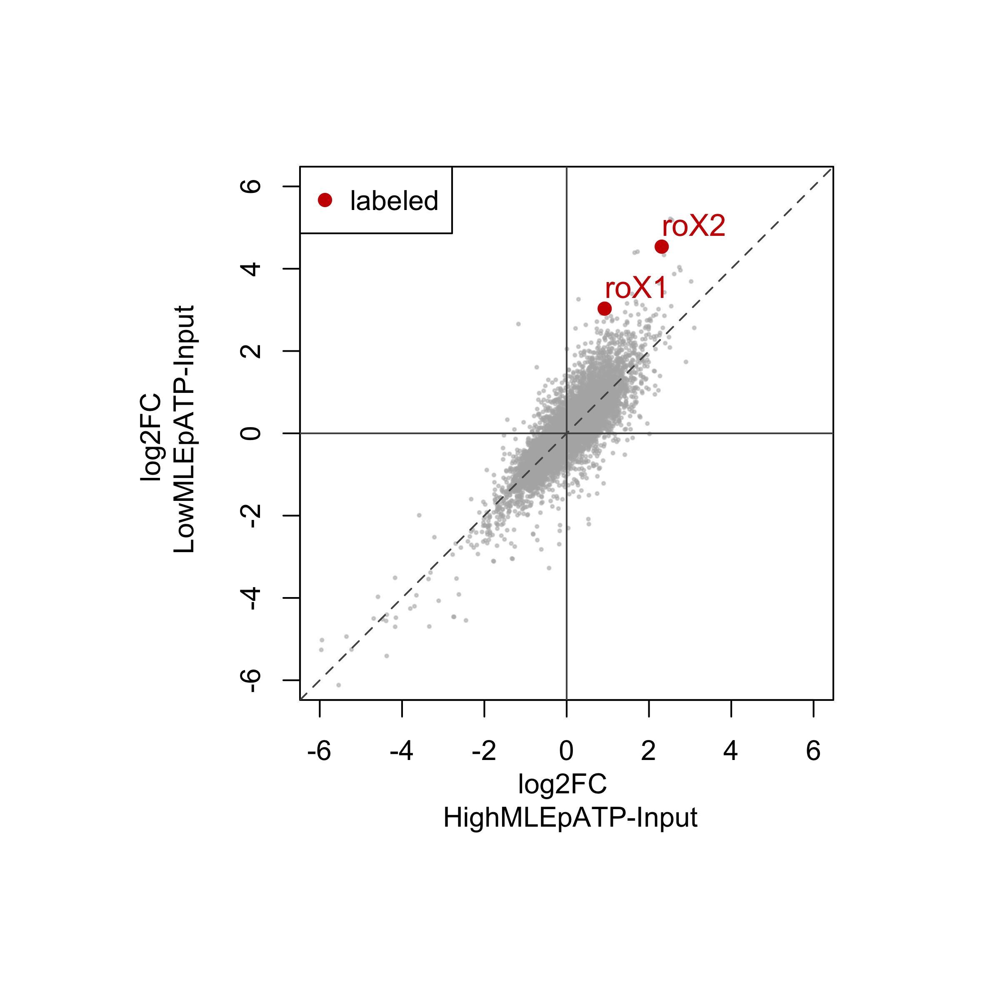

This tutorial helps to build R base graphics functions for plotting results of differential expression analysis by DESeq2. The final functions are part of HelpersforDESeq2 package (under development).
library(devtools)
install_github("tschauer/HelpersforDESeq2")
library(HelpersforDESeq2)
data_dir <- system.file("extdata/", package = "HelpersforDESeq2")
res1 <- read.delim(paste0(data_dir, "res.HighMLEpATP-HighMLEmATP.txt"), row.names = 1, stringsAsFactors = F)
res2 <- read.delim(paste0(data_dir, "res.LowMLEpATP-LowMLEmATP.txt"), row.names = 1, stringsAsFactors = F)
# log10 transform baseMean
res1$log10baseMean <- log10(res1$baseMean+1)
res2$log10baseMean <- log10(res2$baseMean+1)
head(res1)
baseMean log2FoldChange lfcSE stat pvalue
FBgn0066084 4387.8042 2.422501 0.1208548 20.04472 2.244355e-89
FBgn0086661 336.7524 3.723357 0.2106831 17.67278 6.795794e-70
FBgn0058469 1199.0196 2.261265 0.1716334 13.17497 1.222801e-39
FBgn0263476 523.5228 3.768000 0.2954624 12.75289 3.003980e-37
FBgn0263461 104.1833 4.189798 0.3527779 11.87659 1.566328e-32
FBgn0082973 230.1490 5.332174 0.4534268 11.75972 6.294073e-32
padj gene_symbol chr log10baseMean
FBgn0066084 1.938450e-85 RpL41 2R 3.642346
FBgn0086661 2.934764e-66 snoRNA:Psi28S-2566 3L 2.528598
FBgn0058469 3.520444e-36 CR40469 X 3.079188
FBgn0263476 6.486343e-34 snoRNA:CG32479-b 3L 2.719764
FBgn0263461 2.705674e-29 snoRNA:CG32479-a 3L 2.021947
FBgn0082973 9.060319e-29 snoRNA:Psi28S-3308 3L 2.363892
head(res2)
baseMean log2FoldChange lfcSE stat pvalue
FBgn0082957 2474.9854 5.355002 0.4159696 12.87354 6.342515e-38
FBgn0262871 427.8720 -1.471568 0.1242403 -11.84452 2.297167e-32
FBgn0086661 336.7524 2.803978 0.2381877 11.77214 5.433081e-32
FBgn0024555 2542.2904 -1.342037 0.1189759 -11.27990 1.649270e-29
FBgn0083046 740.4408 4.397645 0.4213096 10.43804 1.662105e-25
FBgn0083004 856.6413 3.190541 0.3156490 10.10788 5.097752e-24
padj gene_symbol chr log10baseMean
FBgn0082957 5.478030e-34 snoRNA:Psi28S-3405d 3R 3.393748
FBgn0262871 9.920316e-29 lute 3R 2.632328
FBgn0086661 1.564184e-28 snoRNA:Psi28S-2566 3L 2.528598
FBgn0024555 3.561185e-26 flfl 3R 3.405396
FBgn0083046 2.871120e-22 snoRNA:Psi18S-1389a 2R 2.870076
FBgn0083004 7.338214e-21 snoRNA:Psi28S-1175b 2R 2.933306
par(mfrow=c(1,1), mar = c(4,4,2,2), oma = c(4,4,4,4), mgp = c(2,1,0))
plot(res1$log10baseMean,
res1$log2FoldChange)
par(mfrow=c(1,1), mar = c(4,4,2,2), oma = c(4,4,4,4), mgp = c(2,1,0))
plot(res1$log10baseMean,
res1$log2FoldChange,
xlab = "log10 mean counts",
ylab = "log2 fold change",
xlim = c(0,6),
ylim = c(-10,10),
col = rgb(0.7,0.7,0.7,0.5), pch=19, cex = 0.25)
abline(h=0, col="grey32")
par(mfrow=c(1,1), mar = c(4,4,2,2), oma = c(4,4,4,4), mgp = c(2,1,0))
plot(res1$log10baseMean,
res1$log2FoldChange,
xlab = "log10 mean counts",
ylab = "log2 fold change",
xlim = c(0,6),
ylim = c(-10,10),
col = rgb(0.7,0.7,0.7,0.5), pch=19, cex = 0.25)
abline(h=0, col="grey32")
selection_ids <- c("roX1","roX2")
selection_vector <- res1$gene_symbol %in% selection_ids
selection_color <- rgb(0.9,0.6,0,1)
points(res1$log10baseMean[selection_vector],
res1$log2FoldChange[selection_vector],
col = selection_color, pch=19, cex = 1.0)
legend("topright", legend = "labeled", col = selection_color,
bg = "white", border = NA, bty = "n", cex = 0.8, pch = 19)
par(mfrow=c(1,1), mar = c(4,4,2,2), oma = c(4,4,4,4), mgp = c(2,1,0))
plot(res1$log10baseMean,
res1$log2FoldChange,
xlab = "log10 mean counts",
ylab = "log2 fold change",
xlim = c(0,6),
ylim = c(-10,10),
col = rgb(0.7,0.7,0.7,0.5), pch=19, cex = 0.25)
abline(h=0, col="grey32")
selection_ids <- c("roX1","roX2")
selection_vector <- res1$gene_symbol %in% selection_ids
selection_color <- rgb(0.8,0,0,1)
points(res1$log10baseMean[selection_vector],
res1$log2FoldChange[selection_vector],
col = selection_color, pch=19, cex = 1.0)
text(res1$log10baseMean[selection_vector],
res1$log2FoldChange[selection_vector],
res1$gene_symbol[selection_vector],
col = selection_color, adj = c(0,-0.5))
legend("topright", legend = "labeled", col = selection_color,
bg = "white", border = NA, bty = "n", cex = 0.8, pch = 19)
par(mfrow=c(1,1), mar = c(4,4,2,2), oma = c(4,4,4,4), mgp = c(2,1,0))
plot(res1$log10baseMean,
res1$log2FoldChange,
xlab = "log10 mean counts",
ylab = "log2 fold change",
xlim = c(0,6),
ylim = c(-10,10),
col = rgb(0.7,0.7,0.7,0.5), pch=19, cex = 0.25)
abline(h=0, col="grey32")
selection_vector <- res1$padj < 0.01
points(res1$log10baseMean[selection_vector],
res1$log2FoldChange[selection_vector],
col = selection_color, pch=19, cex = 0.25)
legend("topright", legend = "significant", col = selection_color,
bg = "white", border = NA, bty = "n", cex = 0.8, pch = 19)
par(mfrow=c(1,2), mar = c(4,4,2,2), oma = c(1,1,1,1), mgp = c(2,1,0))
plottingMAbasics <- function(res,
padj_cutoff = 0.01){
plot(res$log10baseMean,
res$log2FoldChange,
xlab = "log10 mean counts",
ylab = "log2 fold change",
xlim = c(0,6),
ylim = c(-10,10),
col = rgb(0.7,0.7,0.7,0.5), pch=19, cex = 0.25)
abline(h=0, col="grey32")
selection_vector <- res$padj < padj_cutoff
points(res$log10baseMean[selection_vector],
res$log2FoldChange[selection_vector],
col = selection_color, pch=19, cex = 0.25)
legend("topright", legend = "significant", col = selection_color,
bg = "white", border = NA, bty = "n", cex = 0.8, pch = 19)
}
plottingMAbasics(res1)
plottingMAbasics(res2)
par(mfrow=c(1,2), mar = c(4,4,2,2), oma = c(1,1,1,1), mgp = c(2,1,0))
res_file_names <- c("res.HighMLEpATP-Input.txt", "res.LowMLEpATP-Input.txt")
for(res_file_name in res_file_names){
res_tmp <- read.delim(paste0(data_dir, res_file_name), row.names = 1, stringsAsFactors = F)
res_name <- gsub(".txt","", res_file_name)
assign(res_name, res_tmp)
}
res_names <- ls(pattern = "^res\\.")
res_names
[1] "res.HighMLEpATP-Input" "res.LowMLEpATP-Input"
for(res_name in res_names){
plottingMA(res = get(res_name),
main_title = gsub("res.","",res_name),
selection_ids = c("roX1","roX2"),
selection_id_type = "gene_symbol",
selection_point_size = 1,
selection_text_label = TRUE,
selection_shadow = FALSE,
xlims = c(0, 6),
ylims = c(-10,10),
x_axis_by = 2,
padj_cutoff = 0.01,
show_legend = TRUE)
}
par(mfrow=c(1,1), mar = c(4,4,2,2), oma = c(4,4,4,4), mgp = c(2,1,0))
res1 <- get(res_names[1])
res2 <- get(res_names[2])
res_merged <- merge(res1, res2, by = "row.names")
plot(res_merged$log2FoldChange.x,
res_merged$log2FoldChange.y,
xlab = "log2FC res1",
ylab = "log2FC res2",
xlim = c(-6,6),
ylim = c(-6,6),
col = rgb(0.7,0.7,0.7,0.5), pch=19, cex = 0.25)
abline(h=0, v=0, col="grey32")
abline(coef = c(0,1), col="grey32", lty=2)
selection_ids = c("roX1","roX2")
selection_vector <- res_merged$gene_symbol.x %in% selection_ids
selection_color <- rgb(0.8,0,0,1)
points(res_merged$log2FoldChange.x[selection_vector],
res_merged$log2FoldChange.y[selection_vector],
col = selection_color, pch=19, cex = 1.0)
text(res_merged$log2FoldChange.x[selection_vector],
res_merged$log2FoldChange.y[selection_vector],
res_merged$gene_symbol.x[selection_vector],
col = selection_color, adj = c(0,-0.5))
legend("topleft", legend = "labeled", col = selection_color,
bg = "white", cex = 1, pch = 19)
par(mfrow=c(1,1), mar = c(5,5,1,1), oma = c(4,4,4,4), mgp = c(3,1,0))
plotLog2FC(res1 = get(res_names[1]),
res2 = get(res_names[2]),
main_title = "",
x_label = paste("log2FC \n", gsub("res.","",res_names[1])),
y_label = paste("log2FC \n", gsub("res.","",res_names[2])),
lims = c(-6,6),
point_size = 0.25,
selection_ids = c("roX1","roX2"),
selection_id_type = "gene_symbol",
selection_point_size = 1,
selection_legend = "labeled",
selection_text_label = TRUE) 
plottingMA
function (res, main_title = "", point_size = 0.25, point_color = rgb(0.7,
0.7, 0.7, 0.5), sign_point_color = rgb(0.9, 0.6, 0, 0.5),
selection_ids = NULL, selection_id_type = "symbol", selection_point_size = 0.5,
selection_point_color = rgb(0, 0, 0, 1), selection_sign_point_color = rgb(0.8,
0, 0, 1), selection_text_label = FALSE, selection_text_size = 1,
selection_shadow = FALSE, xlims = c(0, 6), ylims = c(-5,
5), x_axis_by = 2, padj_cutoff = 0.01, show_legend = TRUE)
{
res$log10baseMean <- log10(res$baseMean + 1)
plot(x = res$log10baseMean, y = res$log2FoldChange, xlab = "log10 mean counts",
ylab = "log2 fold change", xlim = xlims, ylim = ylims,
col = point_color, pch = 19, cex = point_size, xaxt = "n")
axis(side = 1, at = seq(from = xlims[1], to = xlims[2], by = x_axis_by))
abline(h = 0, col = "grey32")
res.sign <- res[res$padj < padj_cutoff, ]
points(x = res.sign$log10baseMean, y = res.sign$log2FoldChange,
col = sign_point_color, pch = 19, cex = point_size)
mtext(text = main_title, side = 3, line = 0.5, adj = 0.5,
font = 2)
if (!(is.null(selection_ids))) {
selection_vector <- res[selection_id_type][, 1] %in%
selection_ids
selection_color <- ifelse(res$padj < padj_cutoff, selection_sign_point_color,
selection_point_color)
points(x = res$log10baseMean[selection_vector], y = res$log2FoldChange[selection_vector],
col = selection_color[selection_vector], pch = 16,
cex = selection_point_size)
if (selection_shadow) {
points(x = res$log10baseMean[selection_vector], y = res$log2FoldChange[selection_vector],
col = "black", pch = 1, lwd = 0.75, cex = selection_point_size)
}
if (selection_text_label) {
if (selection_shadow) {
text(x = res$log10baseMean[selection_vector],
y = res$log2FoldChange[selection_vector], labels = res[selection_id_type][,
1][selection_vector], col = "black", adj = c(0,
-0.5), font = 2, cex = selection_text_size)
}
text(x = res$log10baseMean[selection_vector], y = res$log2FoldChange[selection_vector],
labels = res[selection_id_type][, 1][selection_vector],
col = selection_color[selection_vector], adj = c(0,
-0.5), cex = selection_text_size)
}
}
if (show_legend) {
legend("topright", legend = c("labeled significant",
"labeled non-significant"), col = c(selection_sign_point_color,
selection_point_color), bg = "white", border = NA,
bty = "n", cex = 0.8, pch = 19)
legend("bottomright", legend = c("all significant", "all non-significant"),
col = c(sign_point_color, point_color), bg = "white",
border = NA, bty = "n", cex = 0.8, pch = 19)
}
}
<bytecode: 0x7fd1b6a50c98>
<environment: namespace:HelpersforDESeq2>
plotLog2FC
function (res1, res2, main_title = "", x_label = "log2FC", y_label = "log2FC",
lims = c(-5, 5), point_size = 0.25, point_color = rgb(0.7,
0.7, 0.7, 0.5), selection_ids = NULL, selection_id_type = "symbol",
selection_color = rgb(0.8, 0, 0, 1), selection_point_size = 0.5,
selection_legend = NULL, selection_text_label = FALSE, selection_text_size = 1.1)
{
res_merged <- merge(res1, res2, by = "row.names")
plot(x = res_merged$log2FoldChange.x, y = res_merged$log2FoldChange.y,
main = "", xlab = x_label, ylab = y_label, ylim = lims,
xlim = lims, col = point_color, pch = 19, cex = point_size)
abline(h = 0, v = 0, col = "grey32")
abline(coef = c(0, 1), col = "grey32", lty = 2)
if (!(is.null(selection_ids))) {
selection_id_type <- paste0(selection_id_type, ".x")
selection_vector <- res_merged[selection_id_type][, 1] %in%
selection_ids
points(x = res_merged$log2FoldChange.x[selection_vector],
y = res_merged$log2FoldChange.y[selection_vector],
col = selection_color, pch = 19, cex = selection_point_size)
if (selection_text_label) {
text(x = res_merged$log2FoldChange.x[selection_vector],
y = res_merged$log2FoldChange.y[selection_vector],
labels = res_merged[selection_id_type][, 1][selection_vector],
adj = c(0, -0.5), col = selection_color, cex = selection_text_size)
}
}
if (!(is.null(selection_legend))) {
legend("topleft", legend = c(selection_legend), bg = "white",
col = c(selection_color), pch = 19, cex = 1)
}
}
<bytecode: 0x7fd1b83e9660>
<environment: namespace:HelpersforDESeq2>If you see mistakes or want to suggest changes, please create an issue on the source repository.
For attribution, please cite this work as
Schauer (2020, May 15). CompBioMethods: R Base Graphics Tutorial. Retrieved from https://tschauer.github.io/blog/posts/2020-05-15-r-base-graphics-tutorial/
BibTeX citation
@misc{schauer2020r,
author = {Schauer, Tamas},
title = {CompBioMethods: R Base Graphics Tutorial},
url = {https://tschauer.github.io/blog/posts/2020-05-15-r-base-graphics-tutorial/},
year = {2020}
}